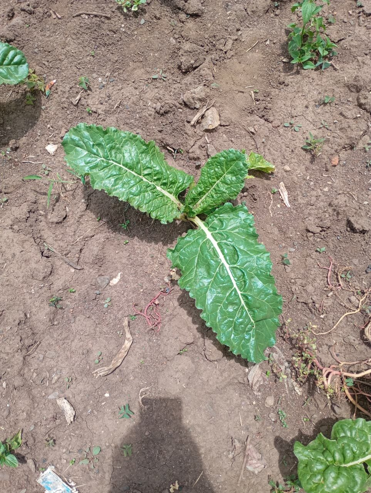
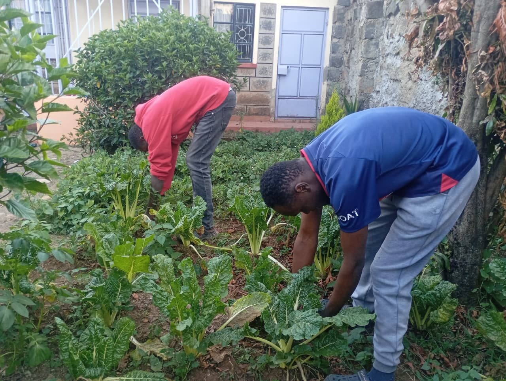
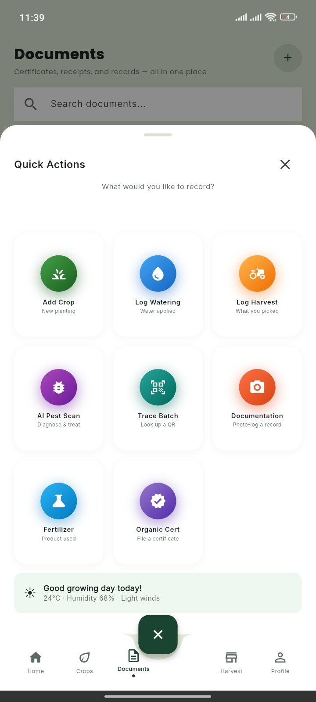

Beyond the Harvest: What Erah Chomba Needed GreenTrack to Do Next
Erah Chomba grows spinach and cabbages on her plot in Subukia. Watching her work through GreenTrack for the first time taught me more about the app's real gaps than any amount of designing at a desk could have.
 Photo / Field Documentation — George Ngugi. Erah Chomba, grower, Subukia.
Photo / Field Documentation — George Ngugi. Erah Chomba, grower, Subukia.Erah Chomba's plot sits close to her home in Subukia, rows of spinach and cabbage worked by hand, the way she has grown food for years. I came to talk to her about GreenTrack — an app built, in part, for growers exactly like her — and to watch, rather than assume, what happened when she actually opened it.
What happened first was difficulty. The interface wasn't something she reached for instinctively, and the early minutes of the session were slower than I'd hoped, spent finding buttons and re-explaining screens. It would have been easy to read that as a problem with Erah. It wasn't. It was a problem with an app that had been designed by people who use apps every day, for a farmer who mostly hasn't needed to.
That difficulty eased. As she kept moving through the app, Erah grew steadily more comfortable, and two features in particular held her attention once she reached them: the nutrition calculator, which she engaged with directly, and the pest and crop-health scanning tool, built to help identify problems on crops like her spinach and cabbage. Both spoke to something she already cared about — what was actually happening to her plants, and what her harvest was actually worth to eat.
Technology has to adapt to the realities of its users. A feature is only as good as a farmer's ability to comfortably reach it.
The most important thing Erah shared, though, wasn't about the interface at all. Asked what would actually help her, she pointed past the screen entirely: farmers like her need help finding markets for what they grow. Tracking a harvest is one problem. Knowing where to sell it, and to whom, is a separate and often harder one — and it's the one that decides whether a season's work turns into income.
That single piece of feedback exposed a real gap in how GreenTrack had been thinking about the farmer's journey. It is not enough to help someone record what they grew; the app also has to help them understand what they can actually do with it. Erah's spinach and cabbage don't stop being her problem once they're logged — they stop being her problem once they're sold.

Spinach, early growth stage — Erah's plot
Working the spinach beds during the visitTwo things in the app did land well, and both are worth naming, because they show what "designed around real users" can look like when it works. The nutrition calculator gave Erah a way to see her harvest not just as a quantity but as food with a value — a connection between what she grows and what people eventually eat. The pest and crop-health tool gave her a way to act on a problem in the field without waiting for someone else to diagnose it. Neither replaced her judgment. Both supported it.

The GreenTrack quick-actions screen, including AI pest scan — one of the tools Erah engaged with directlyNone of this makes GreenTrack finished. It makes the direction clearer. Erah's session pushed usability and accessibility higher on the list — not as an abstract design principle, but as the literal difference between a farmer opening the app confidently or not opening it again. And her feedback on markets did something more specific: it named a real, missing piece of the garden-to-table journey — one GreenTrack now has to take seriously, not as a future nice-to-have, but as part of what tracking a harvest should eventually lead to.
- Greater priority on simple, low-friction interfaces for first-time users
- Stronger emphasis on designing around actual farmer workflows, not assumed ones
- Market discovery treated as a real product direction, not an afterthought
- Validation of the nutrition calculator as something farmers genuinely use
- Validation of pest and crop-health scanning as a practical, hands-on tool
Erah's plot is still there — spinach and cabbage worked the same way it was before I visited. What changed was on my side of the conversation: a clearer sense that GreenTrack isn't just competing with a notebook. It's competing with the very real question of whether a farmer can pick it up, understand it, and trust it to help with what happens after the harvest, not just during it.